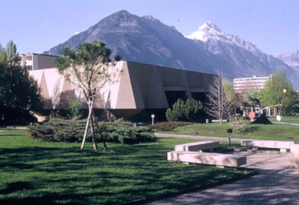
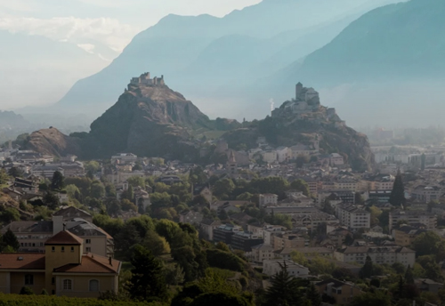
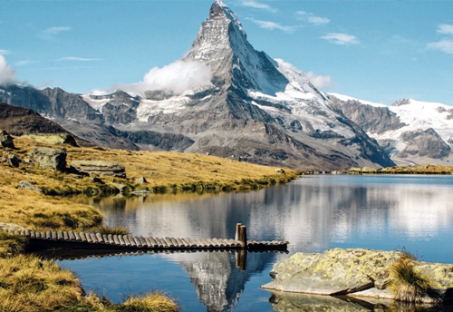
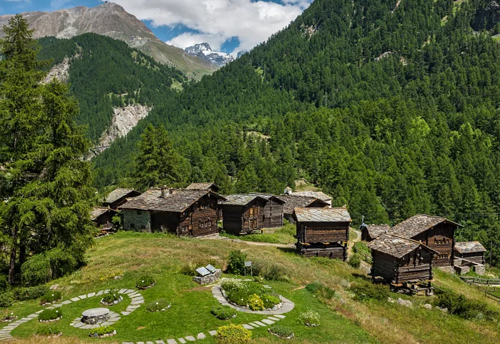
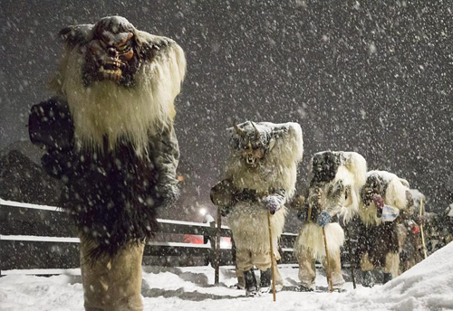
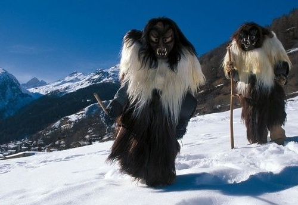

Walliser cultuur
 Het Kanton Wallis of Valais ligt in zuid-west Zwitserland en is 2 talig (Frans en Duits). Sion is zijn hoofdstad en herkent men al van verre aan de oprijzende torens van slot Tourbillon en de burchtruïne Valeria. De karakteristieke torens waken over de hoofdstad van Wallis met zijn 30 duizend inwoners. Verleden en toekomst gaan in een van de oudste steden van Zwitserland, met een 7000 jaar oude historie, naadloos in elkaar over. Een andere cultureel interessante stad is Martigny dat een belangrijke Romeinse stad geweest is, waarvan vele archeologische resten gevonden zijn, zoals een romeinse tempel en een amphitheater. Het Fondation Pierre Gianadda in Martigny is een museum voor Moderne Kunst met een beeldenpark en heeft een permanente tentoonstelling van vondsten vooral uit de Romeinse tijd.
Walliser natuur
 Wallis wordt gekenmerkt door het Rhonedal. Het kanton bestaat voor het grootste deel uit hooggebergte: ten noorden van de Rhône liggen de Berner Alpen, met onder andere de bergen Bietschhorn, Jungfrau en Mönch en de Aletschgletsjer en ten zuiden de Walliser of Penninische Alpen, met onder andere de Weisshorn, Matterhorn, Dom en de Monte Rosa. De Dufourspitze(4634m) in het Monte Rosa-massief is de hoogste berg die (deels) op Zwitsers grondgebied ligt. De Dom(4545m) is de hoogste berg die zich geheel in Zwitserland bevindt, de piramidevormige Weisshorn(4505m) is zeker een van de mooiste bergen van de Alpen, de Matterhorn(4478 m) zonder twijfel de bekendste. Onder de vele gletsjers spant de Aletschgletsjer de kroon: met een lengte van 23km en een oppervlakte van 86km² is het de grootste gletsjer van de Alpen.
Meet the locals
 Tschaggatta is een carnival traditie in het Lötschental in Wallis. Het kanton is tweetalig: de taalgrens tussen Frans (westelijk, Beneden- en Centraal-Wallis) en Duits (oostelijk, Boven-Wallis) bevindt zich tussen Sierre en Leuk. Deze grens is enigszins kunstmatig getrokken. Het eerder tweetalige Siders / Sierre is volledig Franstalig geworden. Zelfs van de meer westelijk gelegen kantonnale hoofdplaats Sion (Duits: Sitten) heeft maar 70% het Frans als moedertaal. Toch is er geen sprake van multiculturaliteit.
Wallis moedertaal (2002)
- Frans: 62,8%
- Duits: 28,4%
- Italiaans: 2,3%
- Andere talen: 6,5%